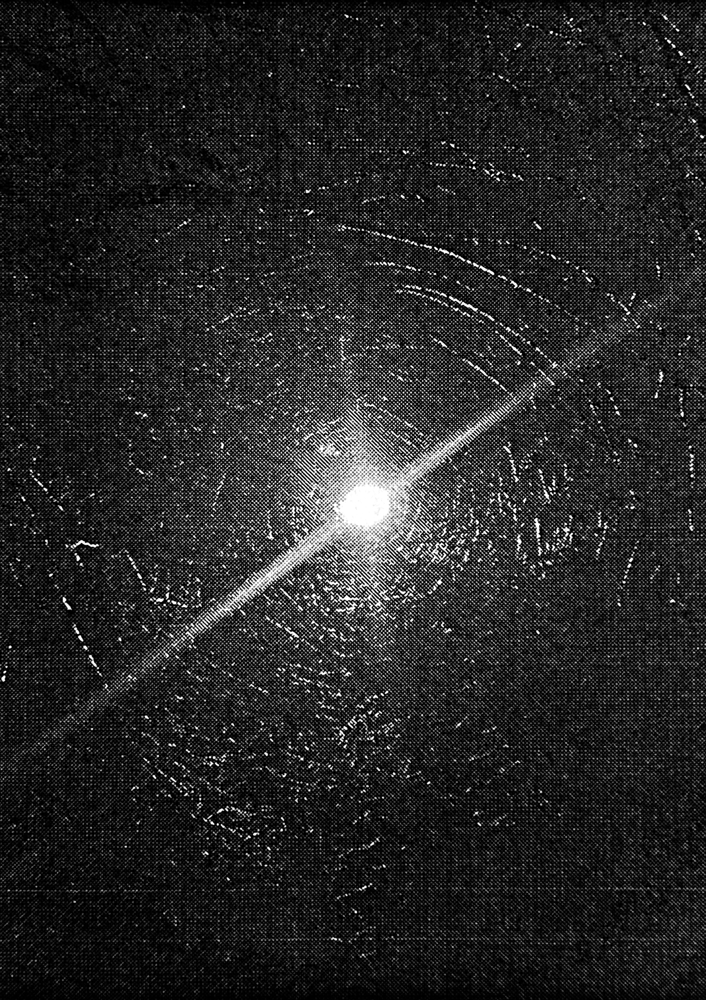

Un mini fanzine casero, editado a partir de fotos digitales tomadas con el celular, impresas, escaneadas y reimpresas.
Un juego entre la desmaterialización digital y la materialización manual.
Una pequeña apreciación de las pausas, del ruido del silencio, de las texturas, y de todo lo que se hace presente cuando el tiempo se detiene.
breve colección de silencios que me detuve a escuchar
2023

